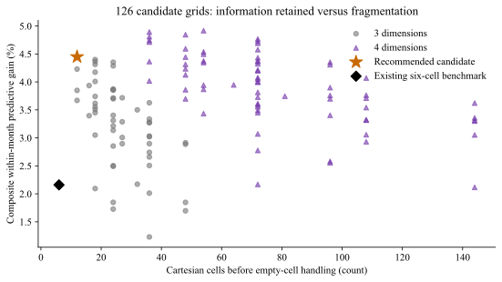
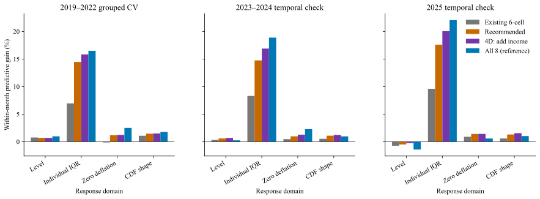
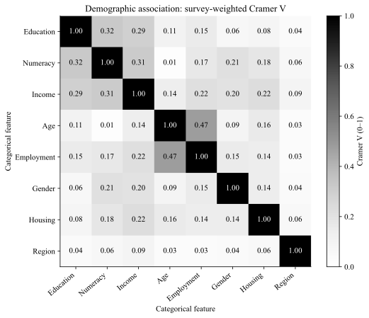
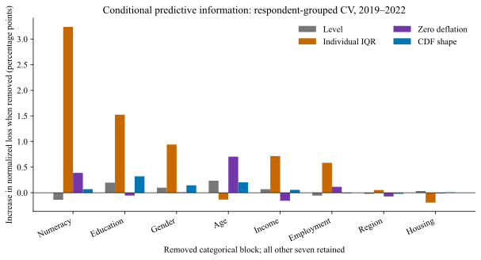
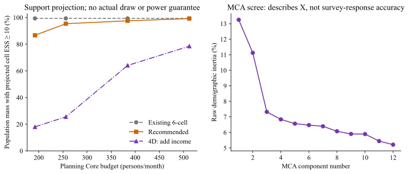
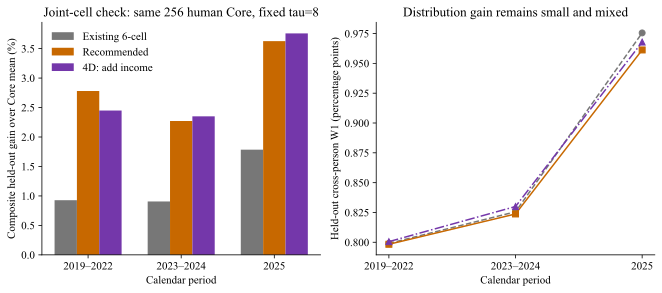

水上挽月 · SCE · 人口分层与Core＋Normal方法准备 · 零新增API
SCE人口网格：维度选择与验证
开发样本推荐：学历 × 数理能力 × 性别，12个理论格。
这是带人口覆盖约束、按受访者分组验证后的候选建议。不是因果结论，不等于该网格已经改善LLM模拟，也没有改变任何默认配置或启动全量运行。
具体划分：学历为高中及以下／部分大学教育／大学及以上；数理为官方High／Low；性别为公开问卷Male／Female。三项交叉为12格，任何缺失另入未知池。性别在此是观察性分组信息，不预设性别导致某种回答。若采用四维分类，收入三档可作为需要部分汇聚的第四层，形成36个细格；暂不要求每个细格独立估计。
82个月2019-01—2025-10完整框架
98,382完整框架人月
95,375统一建模支持人月
126套三维56套＋四维70套
一、怎样选择，避免只凭直觉
- 可解释与可得：比较学历、数理、收入、年龄、就业、性别、住房、地区八类特征。当前财务感受和既有信念作为状态机制另列，不用本期通胀答案定义人口类别。
- 冗余与条件增量分开：用调查加权Cramer V衡量分类关联，用整块GVIF诊断共线性，再逐项移除变量检查其独有预测信息。相关较高不自动删除。
- 四个目标同看：个人Q9均值、个人密度IQR、零通缩填法，以及跨人Q9均值的CDF结构。四个领域等权，避免某个量纲主导选择。
- 先开发、后检查：2019—2022按受访者四折；2023—2024和2025-01—10剔除开发期出现过的人，分别作时间检查。所有时期此前已有研究，不能称全新盲测。
- 控制复杂度：先要求平均至少90%人口质量落在框架N≥20且权重ESS≥10的格子，再在距最佳表现一个区块自助标准误内，优先选择理论格数更少的方案。阈值是透明分析约定，不是功效保证。
评分的含义：这里先去掉每月公共水平，检验不同人之间的回答结构能解释多少。正值代表优于“月内所有人相同”的参照；不是全国中位数MAE，更不能与之前0.2pp等模拟成绩相比较。
该分析选择的是稳定人口维度，未纳入本人历史来竞争维度名额；既有信念仍作为单独状态。条件增量和自助区间依赖所用加总模型及已筛选数据，不能按因果系数解释，开发区间也没有消除多候选搜索的乐观偏差。

开发期同支持比较。纵轴为四领域平均的月内损失改善，越高越好；横轴为理论格数。来源：已有SCE缓存；2019—2022。
二、推荐网格与既有六格相比
表内为四领域综合月内预测改善百分比，越高越好，负值表示不如共同月度水平参照。开发推荐已在读取时间检查分数前保存；不按后两列重新挑赢家。

四领域分开报告，避免综合分数掩盖预期水平或概率表达的退步。时间检查剔除与开发期重复的受访者。
三、哪些指标重复，哪些仍提供额外信息？
开发期关联较强的几对：就业四类—年龄 0.475；数理能力—学历 0.317；收入—数理能力 0.311；收入—学历 0.287。这只是关联，不能解读为因果或可以直接互相替代。

每月调查权重归一化后合并计算的Cramer V；0表示无该种列联关联，1表示完全关联。不是连续变量Pearson相关。

逐项移除后重新拟合，其他七类变量仍在。纵轴为相对无人口信息参照的标准化损失增量，百分点，不是通胀率百分点；负值表示移除反而略好。区块自助区间在聚合JSON中。
展开：整块共线性诊断
| 变量 | 虚拟变量数 | GVIF^(1/(2df)) |
|---|
| 学历 | 2 | 1.069 |
| 数理能力 | 1 | 1.103 |
| 收入 | 2 | 1.115 |
| 年龄 | 2 | 1.186 |
| 就业四类 | 3 | 1.126 |
| 性别 | 1 | 1.046 |
| 住房 | 2 | 1.056 |
| 地区 | 3 | 1.007 |
它衡量参数估计的共线性膨胀，不能替代预测检验。多分类变量整体处理，避免把某一类别的VIF当作整项指标的重要性。
四、细分后有没有足够的Core支持？
推荐网格在82月完整框架中，平均98.1%的人口质量落在N≥20、ESS≥10的格子；新人子池中，平均56.2%的质量落在至少10名新人的格子。新人分池仍需要层级汇聚，不能套用全框架人数。

左：按相同预算、每非空格最低3人的规划分配估算Core支持；不是实际抽样或功效分析。右：MCA原始惯量碎石图，只描述人口特征的结构，不能称它解释了相同比例的问卷差异。
五、怎样进入贝叶斯扩展
- 所选维度定义可解释的基础格；每个人完整画像仍保留其他变量，未入硬格不等于删除该信息。
- 新人／回访者单独条件化；本人历史、近期供体和信息截止规则仍沿各自契约，不给新人冒充真实本人上期。
- 格内对完整Q8＋Q9联合答卷建模并允许部分汇聚，不能把每格平均概率复制给全部Normal。
- 同月真人联合格留出检查已完成；正式接入仍需LLM Core回答扩展损失、权重与稀疏回退。统计维度有效不保证LLM已经按这些特征生成差异。
补充：不是只看加总式回归
对预先选定的四套网格，按受访者留出，用相同256／512名真人Core、两种抽样种子比较联合格经验分布。Core只从其他折抽取；收缩强度固定8，另报0／24敏感性。保留整份答卷供体原子，没有将平均Q9发给所有人。

这是使用当月其他真人答卷的统计可行性参考，不能当作LLM效果或严格事前预测。推荐12格的综合结构分数较旧六格好，但跨人W1改善很小、部分时期反向。未收缩的36／54格出现明显过拟合，说明四维细分需要层级汇聚。以256名Core、强度8为例，12格依赖父池的平均质量约28%，收入四维36格约49%；因此四维可保留作条件层，但不宜把每个小格视为有充分独立证据。此诊断没有确定生产扩展的先验或强度。
敏感性：推荐不是唯一正确的分法
将框架支持门槛从90%提高到95%，开发推荐仍是学历×数理×性别；放宽到85%则转为数理×收入×年龄×性别四维。因此12格是当前支持与复杂度约定下的候选，不是统计证明的唯一最优。几个三维方案处于一个标准误范围内。
展开：Q8独立保护检查
原始Q8含最高10000的极端回答，原值仍为主、截尾只作敏感性。这里不是全国Q8中位数MAE；未据Q8重新选择推荐网格。
边界与复算
官方提供的Q9均值／个人IQR用于这次维度分析，未调用我们近似密度计分器、未重新拟合Q9。原始回答和ID仅留ignored outputs，不进入公开报告或模型输入。
共同支持人月95,375；开发58,869；2023—2024时间检查20,525（因身份重叠排除5,716）；2025检查10,265。缺失造成的支持变化、模型依赖、相关特征共享信息、候选搜索与已见时期都限制结论。
复算：python scripts/analyze_sce_grid_dimensions.py --out outputs/<新目录>
报告：python scripts/report_sce_grid_dimensions.py --source outputs/<分析目录> --out docs/workstreams/20261021_fullperiod/<新报告目录>
聚合结果：/Users/wushuyue/Documents/科研/DISC/socioverse_challenge/outputs/sce_grid_dimensions_20261023_v1/summary.json
方法来源